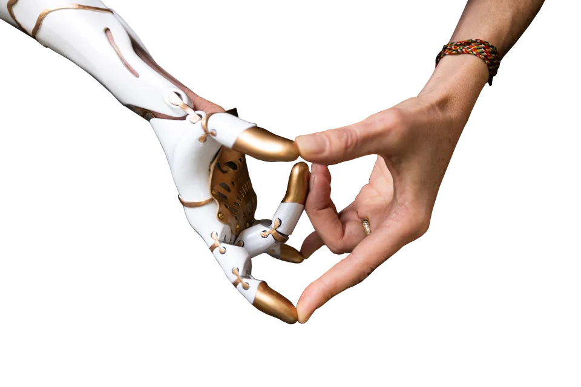
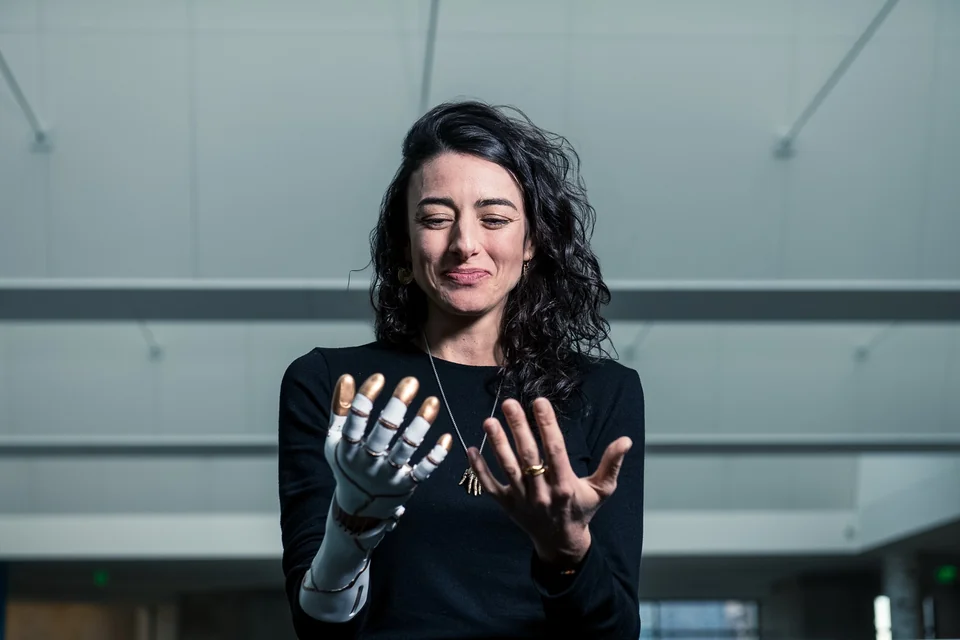
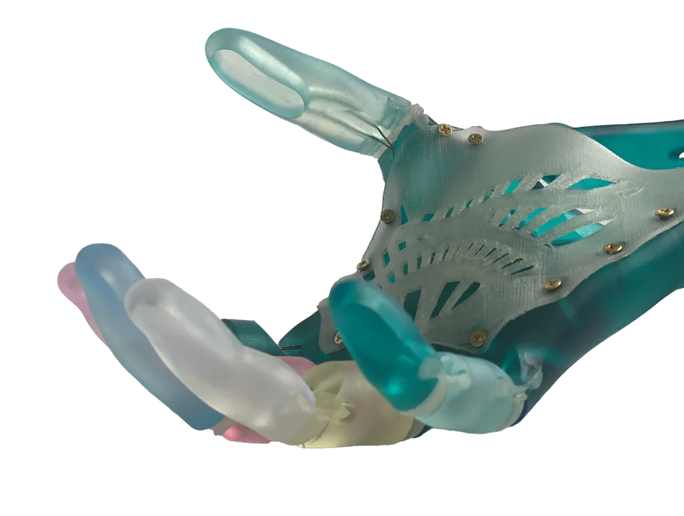
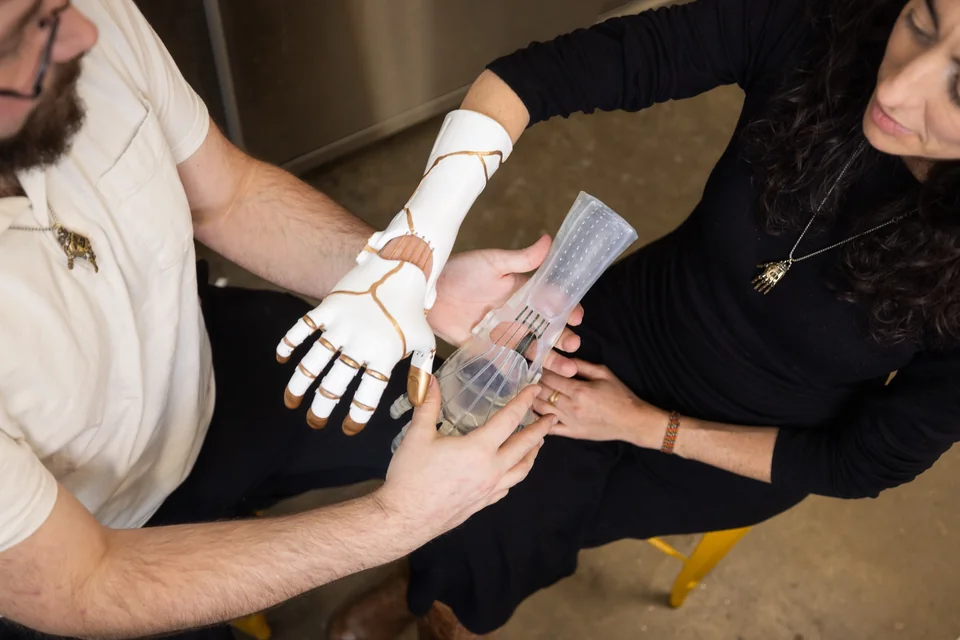
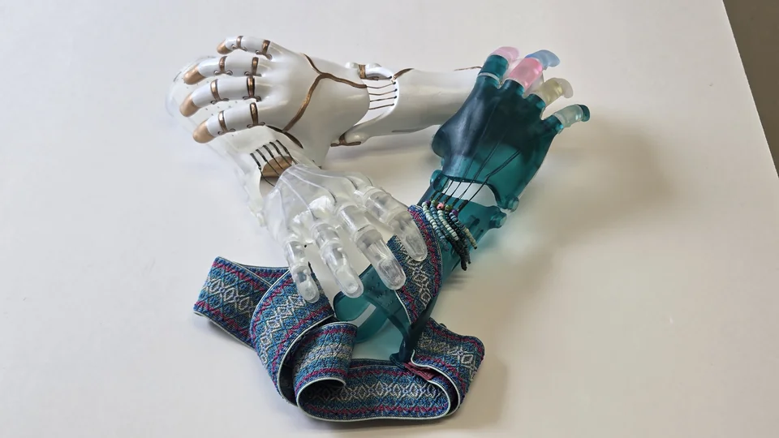

Human-centered designed prosthetics, reframed as tools of empowerment.
We design prosthetic hands that feel less like something to hide and more like something to author. Every finish becomes a statement about dignity, identity, and possibility.


Meet Jimena
Born without a fully developed hand, Jimena spent years trying to adapt to prosthetics before eventually abandoning them because they often fell short, not only in appearance, but also in comfort, fit, and everyday usability. Many devices felt clinical, generic, and disconnected from the people who wore them. As both a prosthetic user and an industrial designer, she began asking a different question: What if a prosthetic could be both highly functional and deeply personal?
Motivated to bridge the medical field of orthotics and prosthetics (O&P) with the human-centered perspective of industrial design, Jimena has explored the open-source Kinetic Hand through the e-NABLE platform to improve socket fit while creating opportunities for identity expression and personalization.
Designing these hands transformed the way Jimena relates to her own body and the way others relate to it. That journey inspired From Stigma to Statement, the belief that a prosthetic can be more than a medical device; it can also be an expression of identity.
Give us a hand
There are two ways you can support this mission.
Support Jimena's Prosthetic Hand
Help fund the advanced functional prosthetic hand she needs after her medical insurance denied coverage. Your support will help provide the technology she relies on every day.
Fundraising CampaignSupport the Research
Help move this research from concept to real-world impact. Your contribution will support material research, prosthetic component sourcing, digital modeling, fabrication, fit testing, user studies, and prototype refinement, bringing this technology closer to providing more accessible, human-centered prosthetic solutions for many others.


Join Us
With support from the NC Innovation Pipeline Grant, and Appalachian State Universities's CONCERT Grant, we are working to bring this research closer to real-world application. We are looking to collaborate with people with upper-limb differences who would like to help shape the future of personalized prosthetics by participating in the research. We also welcome partnerships with prosthetic specialists, clinicians, researchers, universities, healthcare organizations, and others who share our vision of creating more human-centered prosthetic solutions.
Contact UsThe Trueforma Vision
Trueforma treats prosthetics as personal design objects as much as functional tools. Each hand is shaped to support comfort, expression, confidence, and everyday use in the real world.
